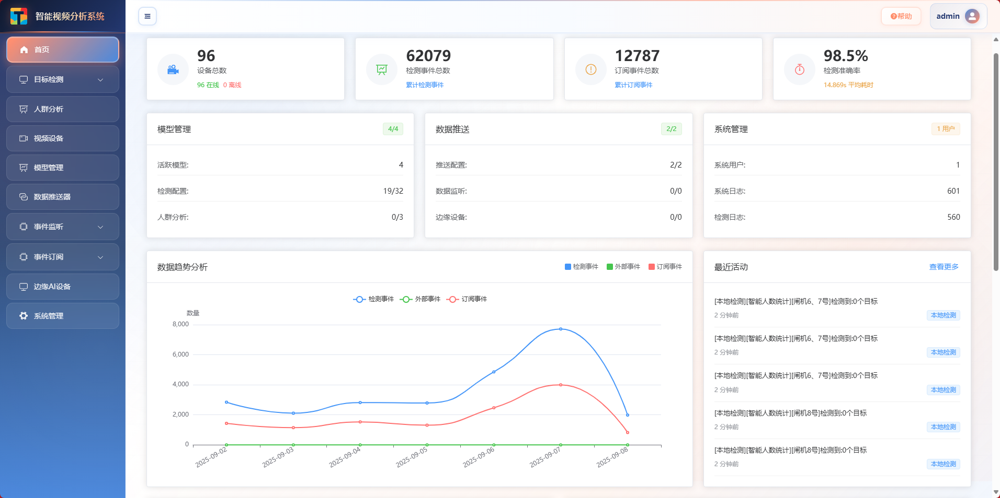

1. 系统概述
智能视频分析系统是一个集视频监控、目标检测、人群分析于一体的综合管理平台。系统采用先进的AI算法，支持多种设备类型和检测模式，为用户提供全方位的视频监控解决方案。
待补充截图
images/help/overview.png

图1.1 系统首页
核心功能模块：
- 首页：设备、事件、性能等概览统计
- 目标检测：实时检测、检测配置、检测事件
- 人群分析 / VLM 巡检 / 规则引擎：区域统计、大模型巡检、复合告警
- 视频设备 / 模型管理：摄像头接入、YOLO 本地模型与 VLM 大模型
- 推送配置 / 监听·订阅：对外推送、外部事件接入
- 边缘节点 / 系统管理：分布式节点、日志、地图配置、设备探活
- 数据大屏：顶部栏入口，展示 KPI、热力图、规则告警与外部接口数据
1.1 菜单导航
左侧菜单与顶部栏功能如下（与系统当前版本一致）：
| 位置 | 菜单项 | 说明 |
|---|---|---|
| 侧栏 | 首页 | 综合统计与快捷入口 |
| 侧栏 ▸ | 目标检测 | 实时检测 · 检测配置 · 检测事件 |
| 侧栏 | 人群分析 | 区域人数分析任务 |
| 侧栏 | VLM 巡检 | 大模型定时截图分析 |
| 侧栏 | 规则引擎 | 规则列表 · 命中记录 |
| 侧栏 | 视频设备 | 摄像头 / NVR 等设备管理 |
| 侧栏 ▸ | 模型管理 | 本地模型（含图片/视频验证）· VLM 大模型 |
| 侧栏 | 推送配置 | 推送配置 · 推送记录 |
| 侧栏 ▸ | 监听/订阅 | 事件监听（监听管理/监听事件）· 事件订阅（订阅管理/订阅事件） |
| 侧栏 | 边缘节点 | 边缘计算节点管理 |
| 侧栏 | 系统管理 | 系统状态 · 系统日志 · 检测日志 · 地图配置 · 设备监控 |
| 顶栏 | 数据大屏 | 新窗口打开 /dashboard |
| 顶栏 | 帮助 | 打开本说明页 |
| 顶栏 | 个人中心 | 账号信息与退出登录 |
待补充截图
images/help/menu-guide.png

图1.2 侧栏与顶栏菜单
系统特点：
- 🎯 高精度检测：采用先进的YOLO算法，检测精度高达95%以上
- ⚡ 实时处理：支持多路视频流同时处理，延迟低于100ms
- 🔧 灵活配置：支持自定义检测区域、目标类别、报警规则
- 📊 可视化分析：提供丰富的图表和报表，数据一目了然
- 🌐 分布式架构：支持多节点部署，具备高可用性和扩展性